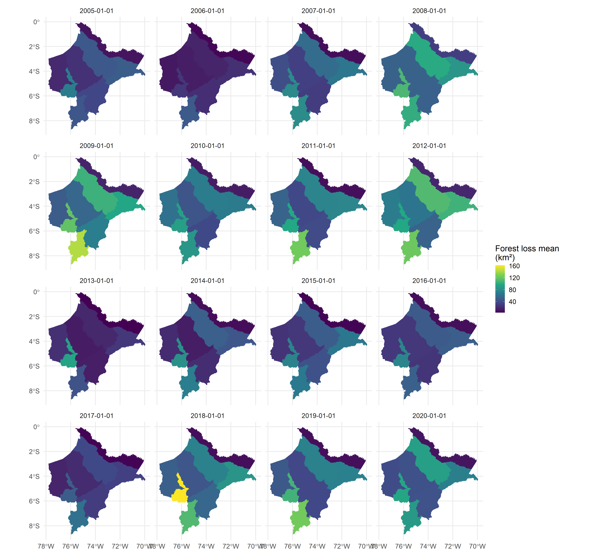

Calculate and extract remote sensing metrics for spatial health analysis 🛰️. This package offers R users a quick and easy way to obtain areal or zonal statistics of key indicators and covariates, ideal for modeling infectious diseases 🦠within the framework of spatial epidemiology 🏥.
1. Installation
You can install CRAN version of land4health with:
install.packages("land4health")or you can install the development version with:
# install.packages("pak")
pak::pak("harmonize-tools/land4health")
library(land4health)
ee_Initialize(quiet = TRUE)── Welcome to land4health ────────────────────────────────────────────────────
A tool of Harmonize Project to calculate and extract Remote Sensing Metrics
for Spatial Health Analysis. Currently,`land4health` supports metrics in the
following categories:
• Accesibility
• Climate
• Enviroment
• and more!
For a complete list of available metrics, use the `l4h_list_metrics()`
function.
──────────────────────────────────────────────────────────────────────────────
Attaching core land4health packages:
→ rgee v1.1.7
→ sf v1.0.212. List of available metrics
l4h_list_metrics()
#> # A tibble: 10 × 11
#> category metric pixel_resolution_met…¹ dataset start_year end_year
#> <chr> <chr> <chr> <chr> <int> <int>
#> 1 Human intervention Defore… 30 Hansen… 2000 2023
#> 2 Human intervention Human … 300 Global… 1990 2017
#> 3 Human intervention Popula… 100 WorldP… 2000 2021
#> 4 Human intervention Urban … 500 MODIS … 2001 2022
#> 5 Human intervention Night … 500 VIIRS … 1992 2023
#> 6 Human intervention Human … 30 Global… 1975 2030
#> 7 Enviroment Water … 30 MapBio… 1985 2022
#> 8 Enviroment Urban … 1000 Urban … 2003 2020
#> 9 Accesibility Travel… 927.67 Malari… 2019 2020
#> 10 Accesibility Rural … 100 Rural … 2024 2024
#> # ℹ abbreviated name: ¹​pixel_resolution_meters
#> # ℹ 5 more variables: resolution_temporal <chr>, layer_can_be_actived <lgl>,
#> # tags <chr>, lifecycle <chr>, url <chr>
#> ... (1 more)3. Example: Calculate Forest Loss in a Custom Region
This example demonstrates how to calculate forest loss between 2005 and 2020 using a custom polygon and Earth Engine.
library(geoidep)
# Downloading the adminstration limits of Loreto provinces
provinces_loreto <- get_provinces(show_progress = FALSE) |>
subset(nombdep == "LORETO")
# Run forest loss calculation
result <- provinces_loreto |>
l4h_forest_loss(from = '2005-01-01', to = '2020-01-01', sf = TRUE)
head(result)
#> Simple feature collection with 6 features and 11 fields
#> Geometry type: MULTIPOLYGON
#> Dimension: XY
#> Bounding box: xmin: -76.89454 ymin: -6.14773 xmax: -75.38564 ymax: -3.681529
#> Geodetic CRS: WGS 84
#> # A tibble: 6 × 12
#> id objectid ccdd ccpp nombdep nombprov shape_length shape_area date
#> <int> <dbl> <chr> <chr> <chr> <chr> <dbl> <dbl> <date>
#> 1 136 136 16 02 LORETO ALTO AM… 9.96 1.57 2005-01-01
#> 2 136 136 16 02 LORETO ALTO AM… 9.96 1.57 2006-01-01
#> 3 136 136 16 02 LORETO ALTO AM… 9.96 1.57 2007-01-01
#> 4 136 136 16 02 LORETO ALTO AM… 9.96 1.57 2008-01-01
#> 5 136 136 16 02 LORETO ALTO AM… 9.96 1.57 2009-01-01
#> 6 136 136 16 02 LORETO ALTO AM… 9.96 1.57 2010-01-01
#> # ℹ 3 more variables: variable <chr>, value <dbl>, geometry <MULTIPOLYGON [°]>
# Visualization with ggplot2
library(ggplot2)
ggplot(data = st_drop_geometry(result), aes(x = date, y = value)) +
geom_area(fill = "#FDE725FF", alpha = 0.8) +
facet_wrap(~nombprov) +
theme_minimal()
# Spatial visualization
ggplot(data = result) +
geom_sf(aes(fill = value), color = NA) +
scale_fill_viridis_c(name = "Forest loss mean \n(km²)") +
theme_minimal(base_size = 15) +
facet_wrap(date ~ .)
4. Example: Extract time series of climate variables
etp_ts <- provinces_loreto |>
l4h_sebal_modis(
from = "2005-01-01",
to = "2022-12-31",
by = "month"
)
etp_ts |>
st_drop_geometry() |>
ggplot(aes(x = date, y = value, col = value)) +
geom_line() +
scale_color_viridis_c("ETP (mm)",option = "viridis") +
theme_minimal() +
facet_wrap(~nombprov, ncol = 4)